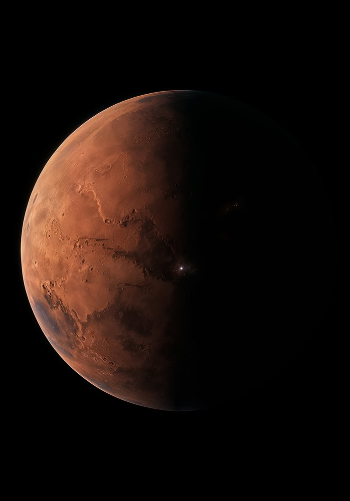

PROJEKT MONTE
Mars Orbital Network Terraform Exploration jest fundamentem naszej misji budowy samowystarczalnej cywilizacji na Czerwonej Planecie.
ROZPOCZNIJ →CZYNIĄC ŻYCIE WIELOPLANETARNYM
Projekt MONTE (Mars Orbital Network Terraform Exploration) to nasza odpowiedź na rosnące wyzwanie zagwarantowania bezpieczeństwa dla przyszłości naszej cywilizacji. Uważamy, że aby przetrwać i rozwijać się jako gatunek, musimy zaadaptować Czerwoną Planetę do fizycznego i biologicznego podtrzymywania ziemskiego życia w długiej perspektywie.
Terraformacja nie jest już pustą fantastyką. Dzięki potędze dzisiejszej technologii, to niezbędny krok w ewolucji ludzkości.

DLACZEGO MARS?
Znajdujący się w średniej odległości 225 milionów kilometrów, Mars to jeden z najbliższych nadających się do zamieszkania sąsiadów Ziemi. Jest o połowę dalej od Słońca niż Ziemia, dzięki czemu wciąż dociera do niego wystarczająca ilość potężnego światła. Jest tam nieco zimniej, ale planetę można skutecznie ogrzać. Jej atmosfera składa się głównie z CO2 z niewielką domieszką azotu, argonu i śladowych ilości innych pierwiastków, co oznacza, że będziemy mogli uprawiać rośliny po prostu zagęszczając atmosferę. Ciążenie na Marsie wynosi około 38% ziemskiego, więc każdy będzie w stanie transportować superciężkie przedmioty i poruszać się dużo swobodniej. Ponadto, długość marsjańskiego dnia jest niemal identyczna jak na Ziemi.
FILARY PROJEKTU MONTE
01. MISJA
Założenia naszego kosmicznego programu eksploracyjnego, mające na celu zabezpieczenie archiwów i przyszłości ludzi z dala od ziemskich zagrożeń.
DOWIEDZ SIĘ WIĘCEJ →02. TECHNOLOGIA
Superciężkie rakiety nośne najnowszej generacji, innowacyjne silniki fuzyjne oraz zamknięte systemy podtrzymywania życia podczas rocznego tranzytu.
DOWIEDZ SIĘ WIĘCEJ →03. KOLONIZACJA
Kolejne fizyczne etapy tworzenia samowystarczalnych miast na powierzchni, zaczynając od wydrążonych podpowierzchniowych habitatów pierwszych generacji.
DOWIEDZ SIĘ WIĘCEJ →04. ZASOBY
Plan rozległej infrastruktury wydobywczej budującej niezależność kolonii poprzez wydobycie podziemnego lodu wodnego i produkcję własnego tlenu do oddychania.
DOWIEDZ SIĘ WIĘCEJ →05. ZAGROŻENIA
Kompleksowa analiza wyzwań czyhających na czerwonej planecie, od zabójczego promieniowania GCR po ekstremalne burze pyłowe i izolację psychofizyczną.
DOWIEDZ SIĘ WIĘCEJ →06. OŚ CZASU
Interaktywny harmonogram ekspansji — od pierwszych testów Starship po budowę samowystarczalnego miasta. Poznaj fakty i daty graniczne naszej misji.
DOWIEDZ SIĘ WIĘCEJ →